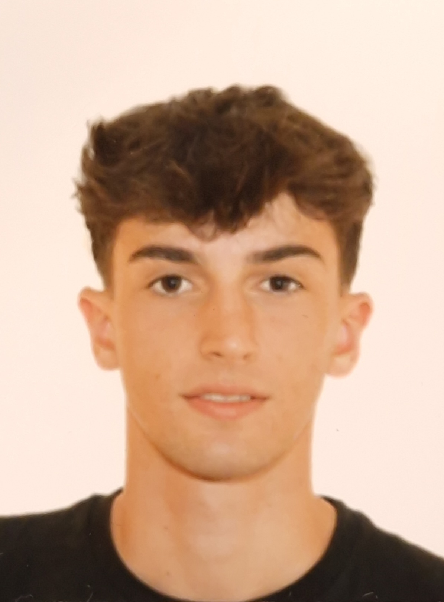

Currículum Vitae (CV)

Informació Personal
Guillem Gual Socias
644 80 17 59
guillemgual2006@gmail.com
Caimari, Selva
Resum Professional
Soc un estudiant de 1r any del Grau Superior de Desenvolupament d'Aplicacións Multiplataforma, al qual he accedit a traves de Batxiller. Professionalment he fet 1 mes d'Ajundant de Monitor amb nins de 3 a 6 anys, on he apres moltes coses sobre els nins i l'educació, i despres d'això hem vaig treure el títol de Monitor de Temps Lliure
Experiència Laboral
- Passes, Ajudant de Montior, 06/2025 - 07/2025
Educació i Formació
- Ies Inca, Batxiller, 20/05/2025
- Sa Llosa Petita, Monitor de Temps Lliure, 28/09/2025
Habilitats Tècniques
Habilitats
- Se dur a terme les baralles i discusions amb infants
- Se escoltar atentament
- Se treballar en equip
- Tenc un gran compromis
Idiomes
- Catellà (Natiu)
- Català (B2)
- Angles (B1)
Enllaços d'Interes
Linkedin